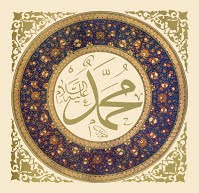

Ислам дини бүгүнкү күнү жер бетиндеги жападан жалгыз акыйкат дин.
Мухаммад Пайгамбар Аллахтын эң акыркы пайгамбары, Ыйык Куран да Анын
эң акыркы ыйык китеби болуп эсептелет. Бүгүнкү күнү Кудай Таала жиберген
диндерден үчөө гана жашап келет. Алар Иудаизм, Христиан жана Ислам диндери.
Бул диндердин экөөсү, тагыраак айтканда, Иудаизм менен Христиан диндери
бүгүнкү күнгө чейин адамдар тарабынан бурмаланып, Кудайдан келген нукура
тазалыгын сактап кала алган эмес. Булардан Ислам дини гана өзүнүн нукура
тазалыгын жана аруулугун сактап келген. Бул чындыкты Алла Таала Ыйык Куранда
төмөнкүчө баяндайт:
«Шек-күмөнсүз, Аллахтын алдындагы акыйкат
дин – Ислам дини...» (Аали Имран 19-аят).
«Кимде-ким Исламдан
башка динди тандаган болсо, анын дини кабыл алынбайт жана ал Акыретте зыян
тартуучулардан болот!» - деп айтылат. (Аали Имран 85-аят).
Ислам деген – «баш ийүү, моюн сунуу, тынчтык» маанисиндеги
«Силм, Салам» деген арабча сөздүн уңгусунан чыгып, «Алла Таалага баш ийүү,
Анын буйруктарына моюн сунуу, тынчтык жолуна кирип бейпил өмүргө аттануу,
ар бир адамга, кала берсе ар бир нерсеге бекем ишеним менен мамиле жасоо жана колунан
да тилинен да бирөөгө жамандык жеткирбөө» деген маанилерди билдирет.
Ислам – Алла Тааланын аяндарына негизделип, Пайгамбарыбыз аркылуу бизге
жеткирилип, иш жүзүндө өмүр чындыгы катары жашап жаткан диндин аты. Ислам дини
жалпысынан ишенимдик, турмуштук жана адеп-ахлактык өкүмдөрдү ичине камтыйт. Ошондуктан,
динди тек гана «ички ишеним» маселеси деп түшүнүү чоң жаңылуу болуп саналат. Исламдын
түпкү өзөгү ыйман жана бекем ишеним. Башкача айтканда, Алла Таалага байланыштуу ыйык
акыйкаттарга кынтыксыз түрдө бекем ишенип, жүрөгүн Алла Таалага арноо. Исламдын туу
чокусу болсо – Алла Тааланы көрүп тургандай жана Алла Таала да аны көрүп тургандай толук
аң-сезим менен кулчулук кылуу (Ихсан) жана жасаган-жасай турган ар бир ишти Алла
Тааланын ыраазычылыгы үчүн жүзөгө ашырууга аракеттенүү (Ихлас) болуп саналат.
Мусулман деген – өзүн Аллахка табыштаган, Ислам дининин
жол-жобоолоруна толук баш ийген, тынчтыкты, бейпилдикти иш жүзүндө жүзөгө ашыра
билген жана колунан да, тилинен да башкаларга зыян келтирбеген адам.
Бул атты Алла Таала Курани Каримде Өзү берген:
«...Ал силерди "мусулман" деп атады...» (Хаж 78-аят).

Орто кылымдагы кул элөөчүлүк доордо Арап чөлкөмүндө бутпарастык ишеними өкүм
сүрүп турган. Адамдар ар кандан буттарга сыйынып, коомчулукту баш аламандыкка алып
келген бардык иштерге жол берилген. Аялдардын укугу тепселип, мал сыяктуу сатылып буюм
катары колдонулуп келген. Бай бутпарас арабтар сансыз аялдарга үйлөнүп мезгил-мезгили
менен аларды кордоп, кыз болуп төрөлгөн жаңы ымыркайларды тирүүлөй көмгөн учурлары да
болгон. Таштан, топурактан жана түрдүү нерселерден жасалган идолдорго сыйынып, аларга
курмандыктарды чалып, жылаңач абалда буттардын айланасында сыйынышкан.
Мына ушундай караңгылык өкүм сүрүп турган доордо 571-жылы 20-апрелде
(раббиул аввал айынын 12синде, дүйшөмбү күнү, таңга маал) Мекке шаарында Азирети
Мухаммад (САВ) пайгамбар дүйнөгө келген. Анын атасы Абдулла апасы Амина. Экөө тең, ошол
учурдагы уруулардын ичиндеги көрүнүктүү үй-бүлөнүн балдары болушкан.
Мухаммад (САВ) дүйнөгө келгенден кийин дүйнөнүн булуң бурчтарында түрдүү
кереметтүү окуялар болуп өткөнү тарыхта маалым. Ал төрөлгөнгө чейин атасынан жана
төрөлгөндөн кийин алты жашында апасынан жетим калат. 6-7 жаштарында тоголок жетим
Мухаммадды (САВ) чоң атасы Абдумуталип асырап алат. Абдумуталип улгайып калганына
байланыштуу Мухаммадды (САВ) сегиз жашына келгенде чоң уулу Абу Талипке калтырат. Абу
Талип аны өз уулундай карап, ага соода кылганды үйрөтөт. Азирети Мухаммад (САВ) Мекке
коомундагы бутпарастардын арасында пайгамбарлыгына чейин «Чынчыл Мухаммад» деп
таанылгандыктан соода-сатыкта да өзүнүн чынчылдыгын көрсөтөт. Анын чынчылдыгы соода
жолунда атагын чыгарат. Натыйжада ошол учурдагы соодагер көпөс аял Азирети Хадижа менен
таанышат. Белгилүү бир убакытка чейин анын соода иштеринде башчылык кылат. Азирети
Мухаммаддын (САВ) соода иштериндеги тактыгы жана аманатка бекем болушу Азирети Хадижага
жагып калат. Азирети Мухаммаддын (САВ) чынчылдыгына жана ак ниеттүүлүгүнө ашык болгон
Азирети Хатижа үйлөнүүнү сунуш кылат. Ал убакта Азирети Мухаммад (САВ) жыйырма беш, ал
эми Азирети Хатижа кырк жашында болот.
595-жылы Курайш уруусунда чоң той берилип, Азирети Мухаммад (САВ) менен
Азирети Хатижа үйлөнөт. Алар жыйырма беш жыл чогу жашап алты балалуу болушат. Балдары
Касым, Зейнеп, Рукия, Умму Кулсум, Фатима жана Абдуллах. Азирети Мухаммаддын (САВ) алты
баласынын ичинен бешөө өзү тирүү мезгилинде кайтыш болот. Жалгыз гана Фатима деген кызы
калат. Азирети Мухаммад (САВ) пайгамбардын урпактары ушул кызынан көбөйөт.
«Чындыгында Алла Таала жана Анын периштелери пайгамбарга салават айтышат. Эй, момундар! Силер да ага салават жана салам айткыла!» (Ахзаб сүрөсү, 56-аят)
Хадис:
«Ким мага бир жолу салават айтса, Алла Таала ага он жолу салават айтат.
Ошондой эле анын он катачылыгы өчүрүлүп, он даражага жогорулайт»
(Насаий, Сахв, 55).
«Кыямат күнү адамдардын арасынан мага эң жакын боло тургандар –
булар мага эң көп салават айткандар болот!» (Тирмизий, Витр, 21).
Аллахтын элчисин (САВ) сүйүү ыймандан, биз үчүн важиб болуп саналат. Пайгамбарыбыз (САВ) азирети Умардын: “Эй, Аллахтын элчиси! Мен сени напсимден башка бардык нерседен артык көрүп, сүйөмүн” деген сөзүнө: “Эй, Умар, мени напсиңден да артык көрүп сүймөйүнчө, ыйман келтирген адам болуп эсептелбейсиң” деген. Муну уккан азирети Умар: “Азыр сени өзүмөн да артык көрүп, жактырамын” деп айткан. Албетте кур эле жактыруу эч нерсеге татыбайт. Жүрөк менен сүйүп, тил менен айтып, кылган иш-аракеттер аркылуу сүйүүнү билдирүү керек. Сүйүүнүн кээ бир белгилери болот. Пайгамбарыбызды (САВ) сүйүүнүн жышаандарына ээ болууну каалабайбызбы, албетте каалайбыз. Дал ошол белгилердин бир канчасы төмөнкүлөр:
Алтынчы сыр: Эй чексиз алсыздык менен чексиз
жардылыкта тоголонуп бараткан бечара инсан! Ырайымдын кандай гана баалуу бир себепчи
жана кандай гана кабыл болунган шапаатчы экенин мына мындан билип ал: Ал ырайым –
жылдыздар менен атомдор бирге укмуштуудай тартип жана баш ийүү менен кошуунунда чогуу
кызмат кылып жатышкан Айбаттуу Падышага жетүүгө себеп болот. Жана ошол Айбаттуу,
Эзелтеден баштап Түбөлүктүү Падышанын эч кимге жана эч нерсеге муктаждыгы жок. Толук
беймуктаждык ичинде. Эч бир жагынан ааламга жана жаратылган нерселерге муктаждыгы
болбогон Ганий-и Алал-ытлак (Чыныгы байлык Ээси). Бүткүл аалам буйругу астында,
башкаруусунда, айбаты менен улуулугу астында толук баш ийүү менен Айбатына чөгөлөшөт.
Мына, эй инсан! Ырайым сени ошо эч нерсеге муктаж болбогон жана Түбөлүктүү Падышанын
алдына чыгарат, Ага дос кылат, Ага маектеш кылат жана сүйүктүү пендесине айлантат.
Бирок, Күндүн жарыгы Күндүн чагылуусун сенин күзгүң аркылуу сенин колуңа берип турса да,
сен Күнгө жете албайсың, анткени өтө узаксың, эч качан ага жакындай да албайсын. Дал
ошол сыяктуу, Аллах Таалага, Эзелтеден баштап Түбөлүккө чейин нурун чачып келаткан
Жаратуучубузга биз чынында абдан алыспыз, жете албайбыз. Бирок Анын Ырайым нуру Аны
бизге жакындатууда.
Мына, эй инсан! Бул ырайымды тапкан түбөлүктүү түгөнбөс Нур казынасын
тапкан болот. Ал казынаны табуунун чарасы: Ырайымдун эң жаркыраган мисалы, өкүлү, ошол
ырайымдын эң чечен тили болгон жана «Рахматал-лил ааламиин» наамы менен Куранда айтылган
Расул Акрам Алейхиссалаату Вассаламдын сүннөтү жана ага баш ийүү болуп эсептелет. Ал эми
ушул «Рахматал-лил ааламиин» болгон денелешкен ырайымга жетүүнүн себеби болсо – салават
айтуу. Ооба, салаваттын мааниси да ырайым. Мына ошол денелешкен жандуу ырайымга ырайым
дубасы болгон салават болсо, ошо «Рахматал-лил ааламиин»ге жетүүгө себепчи болот. Андай
болсо сен салаватты өзүңө ошо «Рахматал-лил ааламиин»ге себепчи кыл жана ал затты да
Мээримдүүнүн ырайымына жетүүгө себепчи кылып ал. Бардык үммөттүн «Рахматал-лил ааламиин»
болгон Алейхиссалаату Вассалам үчүн чексиз салават айтуулары, ырайымдын кандай баалуу
Аллахтын белеги жана кандай гана кенен чөйрөсү бар болгондугун жаркыраган түрдө далилдеп
турат.
Корутунду: Ырайым казынасынын эң баалуу бриллианты жана
дарбазачысы Мухаммад Алейхиссалаату Вассалам болгону сыяктуу, эң биринчи ачкычы да:
«Бисмиллахир-рахманир-рахим» болуп саналат. Ал эми анын эң оңой ачкычы
да салават болуп эсептелет.
للّٰهُمَّ بِحَقِّ اَسْرَارِ بِسْمِ اللّٰهِ الرَحْمٰنِ الرَّحِيمِ صَلِّ وَ سَلِّمْ عَلَى مَنْ اَرْسَلْتَهُ رَحْمَةً لِلْعَالَمِينَ كَمَا يَلِيقُ كَمَا يَلِيقُ بِرَحْمَتِكَ وَ بِحُرْمَتِهِ وَ عَلَى اٰلِهِ وَ اَصْحَابِهِ اَجْمَعِينَ وَ ارْحَمْنَا رَحْمَةً تُغْنِينَا بِهَا عَنْ رَحْمَةِ مَنْ سِوَاكَ مِنْ خَلْقِكَ اٰمِينَ
 Бул чакан китепчеде Ислам акыйдасындагы тавассулдун орду, Куран менен
Сүннөттөгү далилдери жана анын түрлөрү жөнүндө сөз болот.
Бул чакан китепчеде Ислам акыйдасындагы тавассулдун орду, Куран менен
Сүннөттөгү далилдери жана анын түрлөрү жөнүндө сөз болот.
Учурубуздун эң чоң ооруларынын бири – өздөрүнүн бузук
пикирлерин жайылтуу үчүн Ахли сунна аалымдарына каршы
Куран менен Сүннөткө төп келбеген аракеттерди жасашууда.
Көптөгөн адамдар бул оорунун айынан эч кандай далилсиз эле
Ахлу сунна ишенимине каршы тирешүүдө. Эң эле аянычтуусу
итикаддын (ишенимдин) далилдерин билишпеген карапайым
калктын ошондой адамдарга ишенип алуусу жана өздөрү
билбестен Ахли суннанын алкагынан чыгып кетүүсү. Ошондой
маселелердин бири да тавассул маселеси.
Адам баласынын бардык максаттарына алып барчу
жолдордун ар бири өз-өзүнчө себеп болуп эсептелет. Аллахка
жакын пенде болуу үчүн бул себептерди колдонуу «тавассул»
деп аталат. Тагыраак айтканда, тавассул – бул дубанын кабыл
болуусуна себепчи болот деген үмүт менен Аллах Тааланын
ысым-сыпаттарынын, Ыйык Курандын, жакшылык иштердин,
пайгамбарлардын жана салих, олуя пенделердин урматы үчүн
жалгыз Аллах Тааладан бир нерсе тилөө, сурануу, жалынып-
жалбаруу дегенди түшүндүрөт...
Китепче Ислам ишенимдерине кызыккан жалпы окурмандарга арналат...
Түзгөн: Чыныбек Козукеев. Форматы: PDF 1,2Мb. Сапаты жакшы.
Уландысын алдынкы шилтемеден жүктөп алсаңыз болот:
Жүктөп алуу үчүн басыңыз.